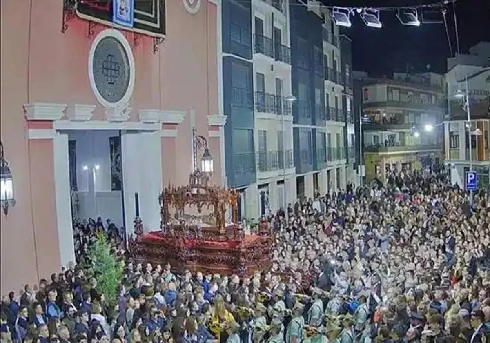
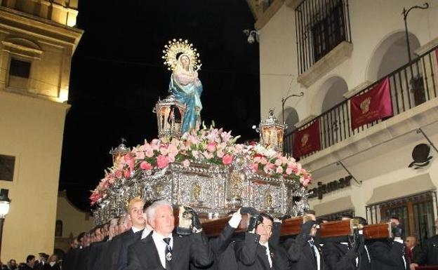
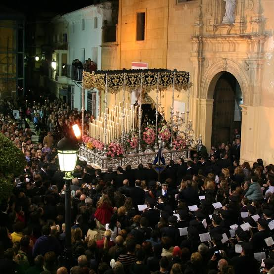

Semana Santa Huércal-Overa
Una tradición importante
La Semana Santa de Huércal-Overa es una de las celebraciones más importantes del municipio y tiene una gran tradición. Durante estos días, las calles se llenan de procesiones, música y muchas personas que salen a ver los pasos.
Las cofradías y las procesiones
Una de sus características principales son las cofradías y hermandades, que preparan los pasos durante todo el año. Los nazarenos, músicos y costaleros participan en las procesiones, creando un ambiente muy especial.

Imágenes y tradiciones
La Semana Santatambién destaca por sus imágenes religiosas y por la decoración de las calles. Muchas familias mantienen esta tradición desde hace generaciones y participan de diferentes maneras en los actos.

Una celebración para todos
Además, esta celebración atrae a muchos visitantes de otros lugares, lo que ayuda a dar a conocer Huércal-Overa. Para los habitantes del municipio, es una tradición muy importante que forma parte de su cultura e historia.
